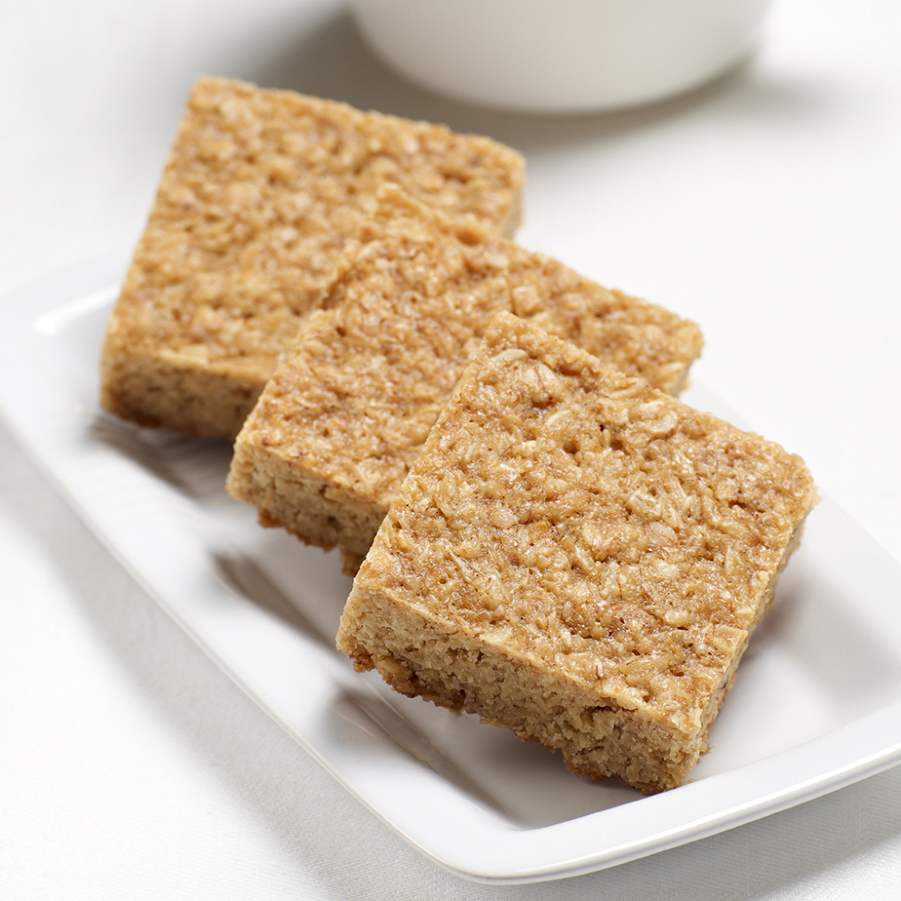

Flapjacks

WHAT YOU'LL NEED
- 250g jumbo porridge oats
- 125g butter, plus extra for the tin
- 125g light brown sugar
- 2-3 tbsp golden syrup (depending on how gooey you want it)
METHOD
-
Heat the oven to 200C/180C fan/gas 6. Put the oats, butter, sugar and
golden syrup in a food processor and pulse until mixed – be careful not
to overmix or the oats may lose their texture.
-
Lightly butter a 20 x 20cm baking tin and add the mixture. Press into
the corners with the back of a spoon so the mixture is flat and score
into 12 squares. Bake for around 15 mins until golden brown.